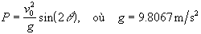

Exercices sur la boucle comptée
- Évaluer approximativement la valeur de e
en calculant les 10 premiers termes de la série après le chiffre 1 :
1 + 1/1! + 1/2! + 1/3! ..+ 1/n!
Solution :
ForNature.m
- La portée P d'un projectile est donnée par l'équation :

Demander à l'utilisateur de fournir la valeur de
v0. Par
exemple, la vélocité d'un projectile de fusil de chasse civil est de
900 m/s. Calculer les valeurs de P en fonction de l'angle θ
variant entre 10 et 60 degrés. Tracer le graphique P en fonction de
l'angle l'angle θ.
Solution :
ForPortee.m
- Les étudiant-e-s de S3 utilisent une petite soufflerie dans le cadre
d'un projet de session. Des mesures sont effectuées pour évaluer
l'efficacité des différentes hélices à produire une poussée en fonction de
l'angle exprimé en radians. Lire la matrice des données du fichier
Helice.dat et tracer le graphique Coefficient de poussée versus
Angle en degrés.
Solution :
ForHelice.m
- Les données de la matrice du fichier EnBus.xls représente le parcours
entre le campus principal et le campus de Fleurimont. L'autobus électrique
contrôle les feux de circulation et s'approprie le droit de passage.
Examiner les données et tracer la distance cumulative en km en fonction du
temps cumulatif de parcours en min.
Solution :
ForVitenbus.m
- La légende dit que Fibonacci a conçu sa série (0, 1, 1, 2, 3, 5, 8,
13, 21, etc.) en observant la reproduction des lapins. Chacun des termes de la
série est la somme des deux précédents et représente la population de la
nouvelle génération. Poser que la première génération est le chiffre 2. Afficher la
valeur de la population de la dixième génération de lapins. Ne pas utiliser
de vecteur pour conserver les données.
Solution : ForFibonacci.m
- Tracer le graphique d'un battement produit par deux ondes. Générer 1000
valeurs de x également espacées entre 0 et 2 pi. Calculer les
valeurs correspondantes de y1 = sin(20 x)
et de y2 = sin(18 x). Tracer (y1 + y2)
en fonction de x.
Solution :
For2sin.m
- Le fichier C.dat contient des ensembles de données
expérimentales. Chaque donnée occupe une ligne. Chaque ensemble est séparé
du suivant par un zéro. Pour chaque ensemble, afficher le nombre de données et
la moyenne.
Suggestion :
Examiner le fichier c.dat. Rédiger tout d'abord un programme qui permet de traiter un premier
ensemble. Généraliser ensuite le programme.
Solution : ForCdat.m
- Un corps tombe en chute libre d’une hauteur de 50 m. Calculer
sa distance h par rapport au sol à toutes les 0,1 s. Tracer le
graphique pour toutes les valeurs de h au-dessus du sol.
h = 0,5 g t2
Solution : ForTour.m